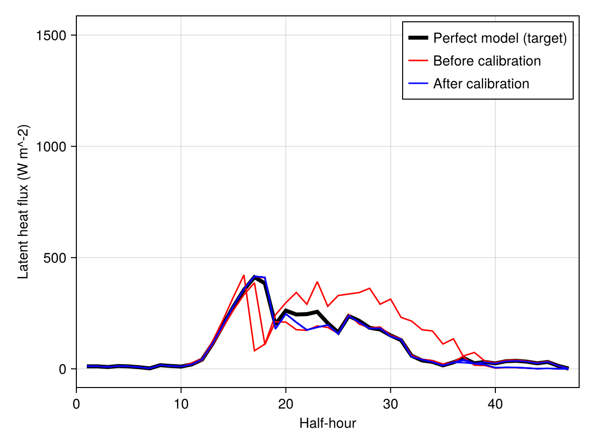

Calibration: "perfect model" experiment.
In this tutorial, we demonstrate that we can recover the parameters of a previous model run via our calibration framework, by calibrating a single site (Ozark) latent heat flux (LHF).
First, we run a simulation of Ozark with known values of parameters g1 and g0, which control the stomatal behavior of leaves and therefore the canopy transpiration, and retrieve latent heat flux (transpiration expressed in energy).
Then, we use EnsembleKalmanProcesses.jl to perform a calibration by giving a prior distribution of the parameters g1 and g0, different from the known parameters used in the first "perfect model" run. Our goal is that, after calibraton on the perfect model latent heat flux, the parameters will be close to the original ones, therefore demonstrating that we can recover the parameters of the perfect model.
To perform this calibration we will need:
- A function returning our model LHF output given the parameters we want to calibrate.
- The "truth" target data, to calibrate on.
- The prior distribution of these parameters.
Import required packages:
import ClimaLandSimulations.Fluxnet as CLS # to run the model
import EnsembleKalmanProcesses as EKP # to perform the calibration
import Random # to use the same seed each run in the tutorial, optional
import Logging
Logging.disable_logging(Logging.Warn); # hide julia warningsWrite a function returning our model LHF output given the parameters to calibrate
function Ozark_LatentHeatFlux(params) # params is a 2 element Array
g1, g0 = params
sv = CLS.run_fluxnet(
"US-MOz";
params = CLS.ozark_default_params(;
conductance = CLS.conductance_ozark(; g1 = g1, g0 = g0),
),
)[1]
inputs = CLS.make_inputs_df("US-MOz")[1]
simulation_output = CLS.make_output_df("US-MOz", sv, inputs)
LHF_soil =
[parent(sv.saveval[k].soil.turbulent_fluxes.lhf)[1] for k in 1:1441]
LHF_canopy = [
parent(sv.saveval[k].canopy.energy.turbulent_fluxes.lhf)[1] for
k in 1:1441
]
LHF = LHF_soil + LHF_canopy
return LHF
end;"Truth" target data to calibrate on
Our default for Ozark, g1 in sqrt(Pa). This is equal to 4.46 sqrt(kPa).
LHF_target = Ozark_LatentHeatFlux([141.0, 0.0001]);Parameters prior
We choose the prior for each parameter distribution to be a Gaussian distribution, for example for g1, with a mean of 221 sqrt(Pa) = 7 sqrt(kPa), std of 100 (3 kPa). Returns μ=5.3, σ=0.4 (values are transformed).
prior_g1 = EKP.constrained_gaussian("g1", 221, 100, 0, Inf);
prior_g0 = EKP.constrained_gaussian("g0", 0.00015, 0.01, 0, Inf);
prior = EKP.combine_distributions([prior_g1, prior_g0]);To use the same seed each run, optional
rng_seed = 2
rng = Random.MersenneTwister(rng_seed)Random.MersenneTwister(2)Calibration
Generate the initial ensemble and set up the ensemble Kalman inversion
N_ensemble = 3 # should be 10
N_iterations = 3 # should be 10
Γ = 5.0 * EKP.I # Γ adds random noise. About 10% of output average.
initial_ensemble = EKP.construct_initial_ensemble(rng, prior, N_ensemble);
ensemble_kalman_process = EKP.EnsembleKalmanProcess(
initial_ensemble,
LHF_target,
Γ,
EKP.Inversion();
rng = rng,
);We are now ready to carry out the inversion. At each iteration, we get the ensemble from the last iteration, apply Ozark_LatentHeatFlux(params) to each ensemble member, and apply the Kalman update to the ensemble.
Can be multithreaded, see https://clima.github.io/EnsembleKalmanProcesses.jl/dev/parallel_hpc/
ClimaLand_out = []
for i in 1:N_iterations # This will run the model N_ensemble * N_iterations times
params_i = EKP.get_ϕ_final(prior, ensemble_kalman_process)
push!(
ClimaLand_out,
[Ozark_LatentHeatFlux(params_i[:, i]) for i in 1:N_ensemble],
)
ClimaLand_ens = hcat(ClimaLand_out[i]...)
EKP.update_ensemble!(ensemble_kalman_process, ClimaLand_ens)
end;Done! Here are the parameters:
final_ensemble = EKP.get_ϕ_final(prior, ensemble_kalman_process)2×3 Matrix{Float64}:
145.49 145.497 145.501
7.41325e-6 7.41287e-6 7.40882e-6As you can see, they are close to the perfect model parameter values, which were 141 and 0.0001.
Plotting
using CairoMakie
CairoMakie.activate!()
fig = Figure()
ax = Axis(fig[1, 1], ylabel = "Latent heat flux (W m^-2)", xlabel = "Half-hour")
range = 1:1:length(LHF_target)
l1 = lines!(ax, range, LHF_target, color = :black, linewidth = 4)
l2 = [
lines!(ax, range, ClimaLand_out[1][i], color = :red) for i in 1:N_ensemble
][1]
l3 = [
lines!(ax, range, ClimaLand_out[3][i], color = :blue) for i in 1:N_ensemble
][1]
axislegend(
ax,
[l1, l2, l3],
["Perfect model (target)", "Before calibration", "After calibration"],
)
xlims!(ax, (0, 48))
save("fig.png", fig);
Note that the figure contains one black line, 10 red and 10 blue lines, drawn from the prior and posterior distribution of parameters. EKI is an interative process that, when successful, leads to the convergence in the ensemble members to a small region of parameter space.
This page was generated using Literate.jl.